Programming Concepts I Know
- Variables
- Arrays
- Loops
- Functions
- Parameters
- If, If-Else, Else Statements
About Me (JAW)
I have a wonderful, amazing, fantastic, loving, perfect girlfriend!
I am always listening to music and enjoy a wide variety of artists.
The pictures above are my two favorite artists: Osamason and Glokk40spaz, both rappers.
Deeper into the Life of JAW
My name is Joseph Alan Wisely. I'm 16 years old, born April 21, 2008, and currently a junior at Mt. Eden High. I’ve had a journey through sports, injuries, and growth. After suffering a torn ACL and meniscus, I’m now recovering post-surgery and focusing on the next chapter in life.
The Dark Side of JAW (Music)
My music taste is an acquired one, full of underground and unique artists. I love music — it’s everything to me, and I even listen to unreleased songs from my favorite artists. Some names include Osamason, Glokk40spaz, Playboi Carti, Ken Carson, Destroy Lonely, and many more.
Favorite Albums
- Flex Musix (FLXTRA) - Osamason (2023)
- Dont Get Took Off - Glokk40spaz (2019)
- 2wo Glokks - Glokk40spaz (2021)
- NOSTYLIST+ (ULTRA) - Destroy Lonely (2022)
- If Looks Could Kill (Director’s Cut) - Destroy Lonely (2023)
- Project X - Ken Carson (2021)
- A Great Chaos (Deluxe) - Ken Carson (2024)
- Whole Lotta Red - Playboi Carti (2020)
- So Much Fun (Deluxe) - Young Thug (2019)
- Barter 6 - Young Thug (2015)
- DS2 (Deluxe) - Future (2015)
- Nothing more Nothing Less - Summrs (2022)
- One Death - 1oneam (2024)
 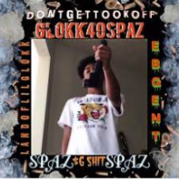
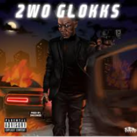
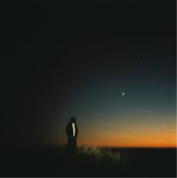
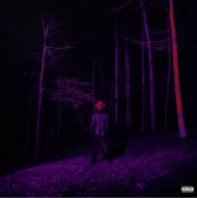
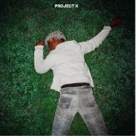
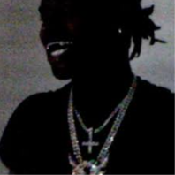
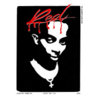
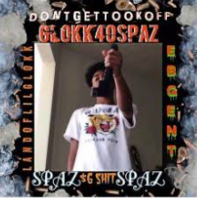
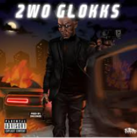
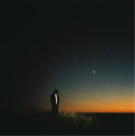
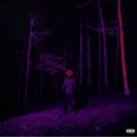
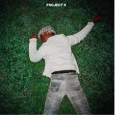
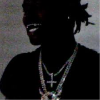
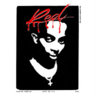
 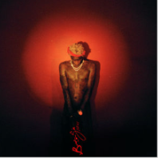
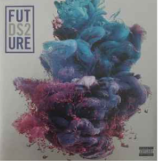
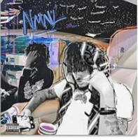
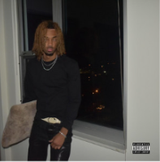
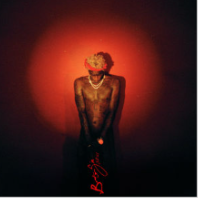
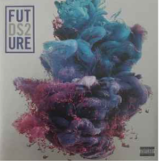
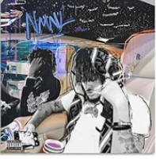
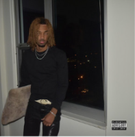
Secret Link of JAW
AP CSP Journey
This class has taught me more than just programming — it’s taught me problem solving, patience, and passion. I went from zero coding knowledge to building games and websites. Special thanks to Mr. Alvarado, aka Gary, for inspiring and guiding me through it all. You're a beast, Mr. Alvarado!
My JavaScript Projects
- Flappy Ball — Flappy Bird but a ball
- Cup Pong — A simple cup pong game
- Fortune Cookie Generator — Generates random fortunes